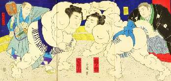

Борис Акунин
Мой календарь
Если вас не устраивает объем вашей талии, размер вашей одежды и внушительность вашего веса, сегодня лучший день в году, чтобы проявить мужество и взяться за решение этой проблемы.
Всемирная Организация Здравоохранения назначила 4 марта Международным Днем Ожирения. Имеется в виду, что в этот день положено призывать всех бороться с ожирением, что я честно и делаю. Призываю.
Держать под контролем свой вес важно еще и для самоуважения: поставил перед собой задачу - выполнил. И гордишься.
Но есть люди, которым быть толстыми не в тягость, а в радость. Они носят свои килограммы с достоинством и удовольствием. Как бегемот или кашалот. Ну и вообще, положа руку на сердце, кто вам больше нравится - толстые или тощие? Мне толстые. Потому что они добрее, спокойнее и как правило умеют радоваться жизни.
Поэтому, если вас накопилось много, но вас это нисколько не расстраивает - просто отметьте этот день как ваш праздник. Накройте хороший стол, поднимите бокал и торжественно скажите: «Ну, за Международный День Ожирения!».

Всё зависит от того, считаете вы лишний вес проблемой или нет. Если считаете - вот хороший момент, чтобы приступить к ее решению. Мужества вам!